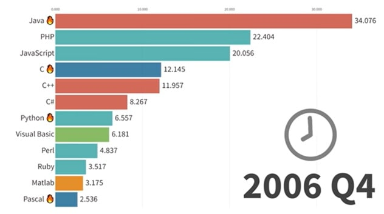

JavaScriptの進化
はじめに
自分が入社した当時、プログラミング言語はJavaが主流で、殆どJava一強という時代でした。
JavaScriptも人気のある言語ではあったのですが、UI周りをちょっと便利にするという使い方（ポップアップを出したり未入力項目を赤字にしたり）が多く、サーバーサイドで業務処理を実装する時にはJavaがよく使われるという時代でした。
しかし最近では様相が変わっています。以下の画像と動画を見るとわかりますが、2006年頃は人気の言語1位常連だったJavaが、いつの間にか1位から転落。最近では「Javaは時代遅れ」等という声が聞こえてくることもあります（個人的には時代遅れは言い過ぎな気もしていますが）。最近（2024年3月現在）は、PythonやJavaScript等が人気の言語上位にランクインしているのをよく見かけるようになりました。

※画像は以下動画から抜粋。
Pythonは機械学習の分野で豊富なライブラリを提供しているから、AIの分野で現在人気なのはわかる。
JavaScriptはなんで人気なのか？自分が入社した時代から何が変わったのか？そもそもJavaScriptってクライアントサイドで動いているものなのでは？？
ぐらいの認識だったので、JavaScriptについて調べた上で、実際に物を作ってみました。
JavaScriptの歴史
JavaScriptの生まれ
まずJavaScriptの歴史から見ていきます。
JavaScriptはWebブラウザNetscape Navigatorに起源を持つプログラミング言語です。1995年にネットスケープコミュニケーションズのブレンダン・アイクによって開発されました。
JavaScriptの登場初期は、ブラウザベンダー間で言語仕様の独自拡張が行われていたため、ブラウザ間の互換性が極めて低かったが、1997年、JavaScriptの中核的な仕様がECMAScript（エクマスクリプト）として標準化され、多くのウェブブラウザで利用できるようになりました。ECMAScriptはEcmaインターナショナルにおいて標準化されたJavaScriptの国際規格です。
しかし、この時代のフロントエンドに求められていたのはCSSによる装飾、JavaScriptによるアラートや入力受付程度のもので、現在のように様々な場面で使用されるような物ではありませんでした。しかし2005年を境にその状況は変わっていきます。
Ajaxの登場
2005年にGoogle社が地図サービスGoogleMapsをリリースして状況は一変します。
GoogleMapsは当時としては革新的な、ページ遷移することなくWebブラウザ側で地図を拡大・縮小する機能を提供しました。Ajaxと呼ばれる、JavaScriptによってサーバーと非同期も通信する技術によって実現しています。同一ページ内でコンテンツが高速かつインタラクティブに動く、軽快なUXがAjaxによって提供されるようになります。
Ajaxの衝撃以降、クライアントサイドではAjaxとそれを活用したDOM(※)の高度な操作が求められるようになります。それに応えるjQueryなどのライブラリが人気を集めました。
サーバーサイドにおいては、Webサーバーは従来のHTMLレンダリングだけでなく、RESTfulをベースとしたWeb APIも提供するようになります。
AjaxとWeb APIにより、よりリッチなWeb業務システムやWebサービスを構築するのが一般的になりました。Webブラウザ側でもJavaScriptを駆使して本格的なプログラムが書かれることになります。
この頃から開発のサーバーサイド、クライアントサイドの分業化が見られるようになります。クライアントサイドはWebフロントエンドとして確立していくようになりました。
※DOM(Document Object Model)は、HTMLやXMLドキュメントなどのマークアップ言語とCSSをツリー構造で表現したデータモデルのことで、JavaScriptなどのプログラミングで操作することができる。
HTML5, Node.js, ES2015, AltJS, React以降の世界
00年代末から10年代にかけてWebはさらに複雑化、高度化していくことになります。HTML5, Node.js, ES2015, AltJS, Reactの4つの視点からその過程を見ていきましょう。
HTML5の登場とWebアプリケーションプラットフォーム化
HTML5は2014年に勧告された仕様です。HTMLの文書仕様だけでなく、Web全体の仕様をアップデートする大きな動きとなっていきました。
HTML5では、Webをアプリケーションプラットフォームとしても機能させられるよう、HTML/CSSやDOM APIに強力な仕様変更が入れられました。
その中でもHistory APIはこの後のWebアプリケーションの発展において特に重要なモノでした。History APIによって、ページの遷移をWebブラウザではなくJavaScriptでハンドリングできるようになりました。これによってコンテンツを画面遷移なしに、URLや履歴を管理しつつ切り替えるシングルページアプリケーションの構築が可能になりました。
HTML5 の仕様策定には Apple, Mozilla, Opera というブラウザエンジンを開発している組織が関わっていました。このこともあり、これらのベンダがリリースするブラウザは標準に準拠しているのが当たり前という流れが出来上がっていきます。
一方、この頃から、Webの標準に準拠していないIEの利用が避けられることが多くなりました。Microsoftもその状況に対応するために、標準への準拠を謳ったブラウザとして Edge を2015年にリリースします。
この Edge, Chrome, Safari, Firefox といった、Web 標準に準拠したブラウザをモダンブラウザと言います。そして2010年後半には、モダンブラウザがシェアの殆どを占める状況になったおかげで、JavaScriptの仕様が、ECMAScriptへの準拠という形で標準化された状況が出来上がります。
HTML5の登場とそれに伴うライブラリの進化、モダンブラウザの普及などにより、クライアントサイドにおいてもより強力な表現が可能となりました。
これを受けて、プレゼンテーション層のプログラムがサーバーサイドからクライアントサイドにシフトしていきます。従来サーバーサイドで行っていたHTMLの描画が、Web APIで必要なデータを取得すればクライアントサイドで可能となったためです。こちらの方が画面遷移の少なさなどによって、より優れた体験を与えられます。
Node.jsによるJavaScriptエコシステムの進化
2009年にはNode.jsが登場します。Node.jsは、サーバーサイドでJavaScriptを使うためのプラットフォームですが、フロントエンドにも大きな2つの変化を与えます。
1つは今までブラウザに閉じられていた実行環境が広く使えるようになったことです。
もう1つはパッケージマネージャー、パッケージリポジトリであるnpm(Node Package Manager)の普及です。JavaScriptで実装されたライブラリをnpm経由で利用できるようになりました。これによってモジュール（パッケージ）を適切に利用し、開発したものをモジュール化してnpm経由で配布する文化が育ちます。サーバーサイド、クライアントサイド問わずJavaScriptアプリケーションはNode.jsを利用して開発し、npmを介して提供されるようになります。
エコシステムが整備されたとこ、他にあげている同時期のWeb全体の躍進もあり、JavaScriptライブラリは活況を迎えます。ライブラリが多種多様に出現し、開発にそれらを用いることがWebフロントエンドエンジニアに求められるようになりました。
JavaScriptの言語機能の進化（CommonJSとESモジュール）
Webフロントエンド開発が高度化するなかで問題になるのがJavaScriptの言語機能の貧弱さです。
JavaScriptが抱えていた大きな問題の一つとして、他のJSファイルを取り込む標準的な仕様が存在しなかったということが挙げられます。
分割したファイルや、外部JSファイルを読み込みたい場合、以下のようにHTMLファイルにscriptタグを書き込むことで別ファイルを読み込んでいました。
<script src="js/aaa_1.js"></script> // aaa.js を分割したファイル
<script src="js/aaa_2.js"></script> // aaa.js を分割したファイル
<script src="js/aaa_3.js"></script> // aaa.js を分割したファイル
<script src="js/vender/hoge.js"></script>
<script src="js/vender/hoge-child.js"></script> // hoge.js を前提に作られたファイル
このようにファイルが分割されていたり外部ファイルを読み込んでいる場合、単純に上から順にファイルの読み込みが行われますが、以下の問題点があります。
問題点
① 命名の衝突をさける為の名前空間と呼ばれる概念がない
→ 変数名が被っていた場合、後から読み込んだファイルの変数名で上書きされてしまう。
② 依存関係を解決する仕組みがない
→ あるファイルをもとに別のファイルが作られていた場合、一方を修正するともう一方の処理が想定どおりに動かなくなってしまう。
こういった問題を解決するため、2009年にCommonJSと呼ばれるプロジェクトが発足し、モジュール化など、様々な仕様を定めました。また、2015年にもES2015（ES6とも言う）という仕様がECMAScriptによって定められます。
CommonJSは元々、サーバーサイドにおけるJavaScriptの仕様を定めることを目標としたプロジェクトでした。このため、Node.jsで利用できますが、ブラウザでは使用できません。ES2015は両方で使用できます。
Node.jsはデフォルトで全てのモジュールをCommonJSで扱います。ES2015で扱うようにするには、以下のいずれかの対応でモジュールシステムを変える必要があります。
-
package.jsonに"type": "module"を追加する
package.jsonは、Node.jsプロジェクトにおいて、そのプロジェクトの情報や依存関係、スクリプトなどの設定を記述するためのファイルです。package.json
デフォルトをES2015にしても、ファイルの拡張子を.cjsとすることでCommonJSとして扱うことができます。{ "type": "module", ... } -
--input-type=moduleをつけて実行する
node main.js --input-type=module - 拡張子を.mjsに変える
今後ES2015に統一されていくと思われますが、現時点ではまだまだ統一されていない状況です（2024年3月現在）。
CommonJSのモジュール機能
CommonJS に従って作られた新たなJavaScriptでは、 export, require という機能を使ってモジュールをimport/exportします。
export について、モジュール側はmodule.exportsに関数やクラスなどを定義します。
module.jsmodule.exports = function() {
console.log('Hello World！');
}
読込む側はrequire([ファイルパス])で読み込みを行います。
main.jsconst helloWorldModule = require('./module.js');
helloWorldModule();
// 出力：Hello World！
ES2015(ES6)によるプログラミング言語としての進化
ES2015はJavaScriptの歴史上でも最大のアップデートだと言われています。モジュールをimport/exportする機能や、constやletなどの様々な構文が増え、書き方も大々的に変わることになります。ここではモジュールとlet, constについてのみ言及します。
ES2015では、同じ export でも CommonJS のものとは記法が違い、モジュール側では通常通り関数やクラスを定義し、頭にexportを付けます。
module.jsexport const helloWorld = function() {
console.log('Hello World！');
}
読み込み側ではimport文を使って先ほどのモジュールを読み込みます。
main.jsimport { helloWorld } from './module'
helloWorld();
// 出力：Hello World！
let と const は変数の宣言に使用する構文で、これまで使用されてきた var に変わるものです。var は以下に示すように、再宣言できるという問題がありました。
varによる変数の宣言var name = 'soarflat';
console.log(name); // => soarflat
name = 'SoarFlat'; // 再代入する
console.log(name); // => SoarFlat
var name = 'SOARFLAT'; // 再宣言をする
console.log(name); // => SOARFLAT
この問題を解決するために追加された機能が let です。let を使用した場合、同じ変数名を再宣言するとエラーになります。
letによる変数の宣言let name = 'soarflat';
console.log(name); // => soarflat
name = 'SoarFlat'; // 再代入する
console.log(name); // => SoarFlat
let name = 'SOARFLAT'; // 再宣言するとエラーになる
const は定数を宣言するためのもので、再宣言はもちろんのこと、再代入もできないようになっています。
constによる変数の宣言const NAME = 'soarflat';
console.log(NAME); // => soarflat
NAME = 'SOARFLAT'; // 再代入するとエラーになる
これ以外にも、Promise というオブジェクトと Async/await という構文が追加され、非同期処理を容易に扱えることができるようになるなど、様々な機能がES2015で追加されました。
AltJSの登場
ES2015と前後してAltJS(Alternative JavaScript)と呼ばれるものが登場します。AltJSは、JavaScriptの代替として機能する多様なプログラミング言語群のことを指します。
JavaScriptの弱点を補ったり、特定のニーズに特化したJavaScriptの代替言語として開発されました。
より簡潔な構文を目指したCoffeeScriptや、型を注釈として付与するTypeScriptなどがあります。特にTypeScriptは現在の開発で広く使われるようになりつつあります。
Reactをはじめとするフロントエンドライブラリの出現
ここまで紹介してきたように、フロントエンドを取り巻く仕様、技術は高度化しています。これらが可能になったことで、アプリケーション、サービスにおいても複雑な要件が求められるようになります。
アプリケーションデータフローをフロントエンド側で受け持つなど、設計段階から難易度が上がり、MVCのようなアプリケーションの構造を持ったフレームワークが必要とされるようになります。React, Vue.js, Angular, Svelte などの新たなWebアプリケーションフレームワーク、ライブラリが次々と出現します。結果、高度なフロントエンドアプリケーションの開発はjQueryで無理矢理に作るよりも構造化しやすくなりました。
SPA(Single Page Application)という新しいWebアプリケーションの構築手法も普及してきました。
ここまでが、JavaScriptが生まれてから現在までの歴史になります。
ここから先はNode.js, SPA（React, Next.jsとVue.js, Nuxt3）, AltJSの代表格であるTypeScriptについて見ていきます。
関連技術詳細
- 【工事中】jQuery
- Node.js
- SPA(Single Page Application)
- TypeScript
参考書籍


参考サイト
- Qiita ES2015(ES6) 入門
- ThinkIT ES2015のモジュール管理
- まるノート JavaScriptの歴史 ～CommonJSとES2015～
- ICS MEDIA ES Modules入門 JavaScriptでモジュールを使う時代
- Zenn CommonJSとES Modulesについてまとめる
- wikipedia CommonJS
- wikipedia ECMAScript
- HackMD common.js と ECMAScript の違いについて
- 株式会社NextCode JavaScriptに種類？CommonJSとECMAScript
- エンジニアスタイル altJS(代替JavaScript言語)とは？種類と選び方を紹介
- wikipedia JavaScript
- wikipedia Document Object Model
- Mmdn web docs ドキュメントオブジェクトモデル (DOM)
- Mmdn web docsUdemy DOM の紹介
- Udemy メディア DOMとは？仕組みや構造を解説！HTMLやJavaScriptとの関係は？
- DOMとは
- CodeGrid ECMAScript 2015の新機能 第1回 Promise 1
- ThinkIT ES2015が備えるモダンな非同期処理
- npm